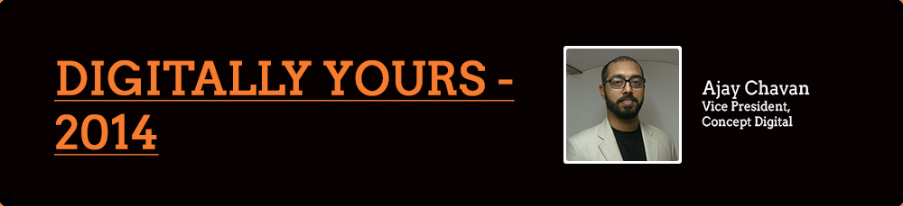
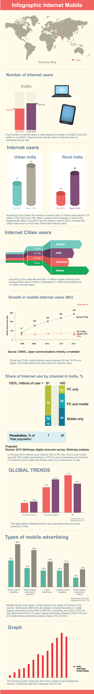

In spite of the clear benefits offered by digital, the business leadership surprisingly prefers to adopt a ‘wait & watch’ approach towards developing and implementing a digital strategy. What many conventional ‘market leaders’ fail to realize is that it’s no longer possible to separate “the technology” from “the business”. Let’s face it; we are either online or sleeping. Technology is now an inseparable part of every aspect of our personal and business life. It is the most strategic tool to drive competitive edge, growth, and profitability.
And we are saying this at a time when India is stipulated to take over the US in internet usage, this very year, 2014.
The number of internet users in India reached 205 million in October of 2013 and by June 2014, India will have 243 million internet users, at which point of time, it is expected to overtake the US as the second largest internet base in the world- to quote the internet and Mobile Association of India, report. Currently, China is in the first spot with 300 million users, while the US takes the second spot with 207 million connected people.
According to the report, the number of internet users in urban India alone was a whopping 137 million in October, 2013 and is estimated to touch 155 million by March-April 2014.
Interestingly, rural India has witnessed a growth of 58% in terms of active Internet users since June 2012.
Amongst cities, Mumbai alone with its 12 million internet users is in the lead, followed by Delhi with 8.1 million internet users and Hyderabad with 4.7 million internet users. Kolkata, however, registered the highest growth of internet users among all the top cities in India.
This data clearly indicates that the web is growing more and more powerful in India. With social media’s popularity increasing, news websites and live streaming have now become a way of life. Movies, television, even your world news is on your desktops, laptops and smartphones. Mobile phones have given a major boost to the usage of internet in this country. It won’t be surprising to see the internet as the new superpower in mainstream media in the years to come.
‘Every Business is a Digital Business’ (to borrow from an Accenture report, published in 2013) signals a transformational shift not just in the role of technology but also in business models that bolster success. The hot trends; social, mobile, cloud and big data are well past the experimentation stage. These technologies now offer practical, fast and cost effective solutions to some of our toughest business challenges and help in cashing in the biggest opportunities.
“A mobile mindset will separate tomorrow’s most successful business from their competitors” – aptly worded in the blog page of LurnQ
The world is going mobile and with it, our strategy must go mobile as well. In 2014, for the first time, mobile internet usage will overtake desktop internet usage. From the release of the first iPhone to the latest revolution in wearable technology like Smart Watches – the Galaxy gear & Pebble; Smart fitness tech like Fuelband and of course the Google Glass, mobile technology has taken a hold on our lives. For many people, their first computer will be a mobile one. Mobile devices provide accessibility and help businesses reach their goals, whether it’s external (connecting customers) or internal (reviewing/controlling data, streamlining processes).
In the US, 6 out of 10 businesses have a strategy for integrating mobile into their broader marketing campaigns, according to a new report into cross-channel marketing by eConsultancy.
While this obviously means that 40% of businesses still haven’t come up with a coherent mobile strategy, it is an improvement on last year when just over half (51%) of the businesses were yet to integrate mobile strategy into their overall marketing campaigns.
This indicates that businesses are slowly moving in line with this significant consumer trend, though it’s worth noting that the number of respondents who said mobile was “very much” integrated; remained fairly static at 15%.
These findings are based on a survey of nearly 900 eConsultancy subscribers from both companies and agencies, carried out in April and May 2013. We find that in the mobile marketing space, India, has followed some of the US trends very closely and in the absence of a well defined report, I will not be overstepping to believe that Indian markets in 2014 will have a similar trend imprint.
Does your organisation have a strategy for integrating mobile into its broader marketing campaigns?
GLOBAL TRENDS
Types of mobile advertising
The report also asked marketers about the kind of mobile advertising they were currently implementing. The results showed that there has been a significant increase across every type of mobile advertising for the past year, with more than half of the businesses (56%) now engaging in mobile search marketing, up from around a third (35%) in 2012.
But for both companies and agencies, the largest increase has been in mobile display advertising (rising 23% to 48% for companies, and 41% to 55% for agency clients).
According to a latest Nielsen survey around 51 million Indians use smartphones. Assuming India’s population to be 1.22 billion, around 4.18% of Indian population uses smartphones. India has around 900 million mobile phone users. So, around 5.66% of mobile phone users are smartphone users and it is imperative that companies in India too have a strategy to leverage benefits from this super power.
So what should marketers’ mobile marketing strategy be for 2014
2014’s Mobile Marketing Strategy will lay stress on incorporating the high use of mobile applications and mobile sites. A prudent strategy would be to run campaigns on multiple mobile channels periodically and conduct regular CRM profiling and network intelligence for customer engagement
Targeting and engaging audiences via applications like whatsapp and line, should be a must have in marketing plans through 2014. Whatsapp became an obsession in 2013, accelerating faster than ever in India, “it currently stands at 30 million active users in the country and growing, at this point,”says Neeraj Arora, Head Business Development, WhatsApp. What is noteworthy is the gigantic leaps in numbers of whatsapp’s active monthly users in India towards the end of 2013. From 20 million in August, it was up to 25 million at the beginning of December (as reported by Medianama)
To help the messaging app – which has over 350 million active users around the world, grow even more in India, WhatsApp has inked a deal with the Telco, Tata Docomo to offer unlimited WhatsApp usage to its subscribers. Nokia Asha now has the app, to follow in Tata’s footsteps. Just a few examples to show that internet through mobile is penetrating deeper into both urban and rural India.
Status of mobile internet usage in India estimated by June 2014
Click here to see Infographic.
Press Esc to close

We in India, still do not have any access to 4G internet and our carriers have yet to come up with providing LTE internet that helps retard draining of phone batteries. Once we have mobile internet access in lines with countries like Korea and Japan, we can see even faster growth in the above encouraging numbers. And I hope this dream won’t remain a dream, as carriers in India have already started talking about Fibre Optics & LTE versions of 4G which will give rise to more immersive content rich websites. Having said that, currently India’s mobile technology has chartered a fantastic journey and promises to keep the growth pace. In such an environment, I believe it’s time marketers adopted a test-and-try approach rather than the very limiting wait-and-watch policy of yore.